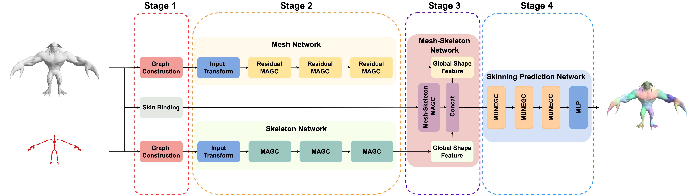
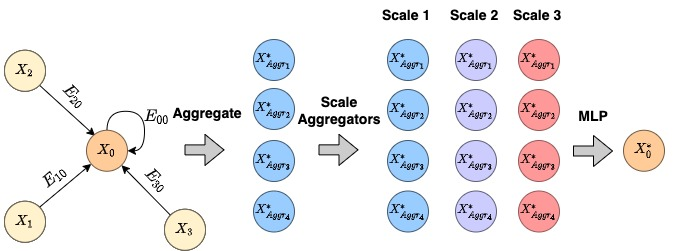

SkinningNet architecture is composed of four main stages. Stage 1 is in charge of building the needed graphs from the input mesh and its associated skeleton. Stage 2 is responsible for extracting features independently for the mesh and skeleton. Stage 3 combines the previous mesh and skeleton features to extract a descriptor that relates both structures. Stage 4 predicts the skinning weights.

The Multi-Aggregator Graph Convolution (MAGC) is an extension of the Message-Passing scheme [11], where multiple aggregators are used to let the graph covolution layer distinguish between neighbourhoods with identical features but with different cardinalities.
